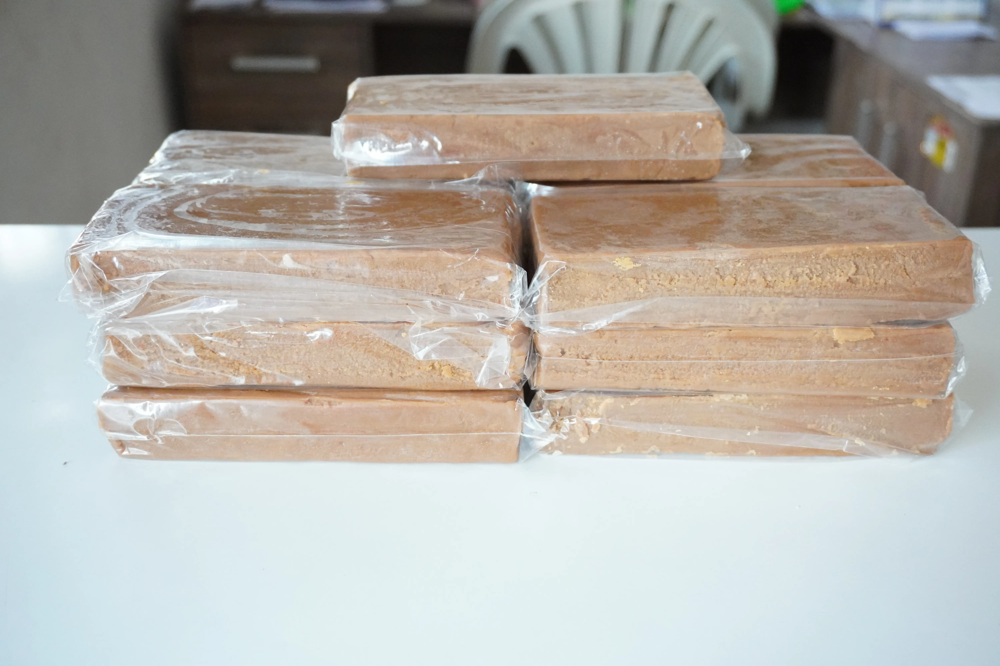
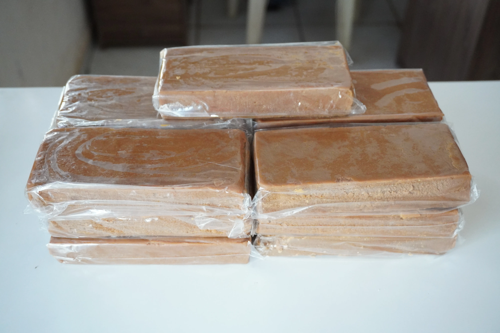
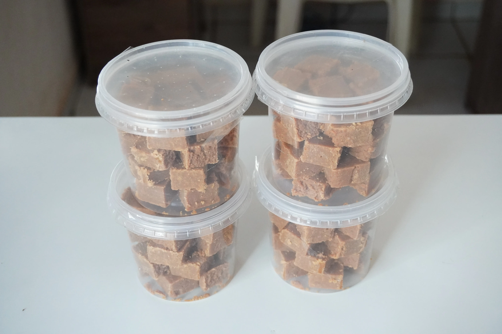
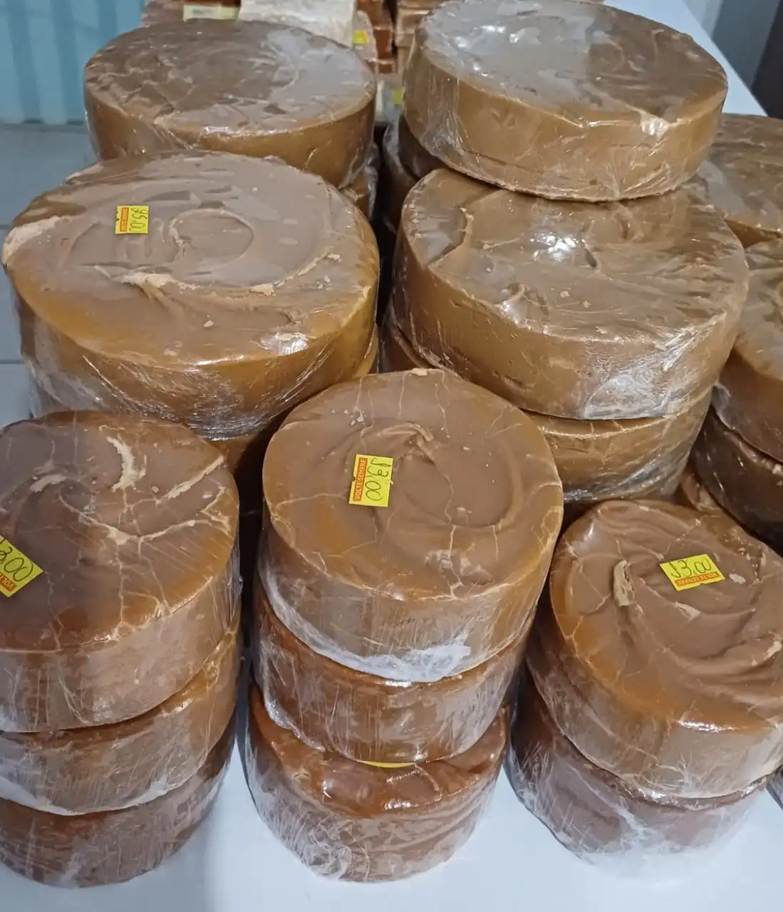

Rapadura Artesanal
Escolha o Sabor:
Retire na loja: R. Bom Jardim, 379 — Centro, Cáceres.
Rapadura Artesanal: O Doce de Cana que Alimentou Gerações no Interior do Brasil
A rapadura é um dos alimentos mais antigos e genuínos da cultura alimentar brasileira, especialmente no Centro-Oeste e no Nordeste do país. Produzida a partir do caldo de cana-de-açúcar cozido e moldado sem passar por refinamento, branqueamento ou adição de conservantes, ela preserva todos os nutrientes naturais que o processo industrial destrói: ferro, cálcio, potássio, magnésio e vitaminas do complexo B. Na Peixaria Rio Paraguai, em Cáceres-MT, a rapadura chega diretamente de pequenos produtores artesanais da região, fabricada em lotes pequenos com cana cultivada localmente — a mesma tradição que as famílias do interior mato-grossense conhecem e valorizam há gerações.
O Processo: Da Cana ao Doce, Sem Atalhos
O processo de produção da rapadura artesanal é simples, honesto e completamente diferente da fabricação de açúcar refinado. A cana é cortada no ponto exato de maturação, quando o teor de sacarose está no pico. O caldo é extraído ainda fresco na moenda e levado diretamente ao tacho de cobre sobre fogo de lenha. O cozimento lento — que pode durar horas — evapora a água e concentra os açúcares e minerais naturais. Quando atinge o ponto, o melado espesso é despejado em formas de madeira e resfriado até solidificar. Nenhum conservante, nenhum corante, nenhum estabilizante — apenas cana, fogo e tempo.
Sabores Disponíveis e Como Usar na Cozinha
Oferecemos três variações de rapadura artesanal, cada uma com personalidade própria:
- Cana Tradicional: Pura, com o sabor inconfundível da cana fresca, levemente caramelizado e com aquele aroma de engenho que desperta memória afetiva. Excelente ralada no café preto ou no leite quente.
- Rapadura de Leite: A rapadura de cana unida ao doce de leite artesanal — resultado cremoso, menos intenso e absolutamente irresistível. Ideal para comer pura, cortada em cubinhos com café.
- Rapadura em Cubo: Apresentação prática para quem usa como adoçante culinário ou presente gastronômico — fácil de ralar e dosar nas receitas do dia a dia.
Além do consumo direto, a rapadura é um ingrediente versátil na culinária regional. Ralada, adoça o cuscuz, o curau, o arroz-doce e a pamonha de forma muito mais nutritiva do que o açúcar refinado. Dissolvida em água quente, cria uma calda rústica perfeita para regar queijo assado. Nas fazendas pantaneiras, a rapadura era — e ainda é — a fonte de energia rápida levada para o trabalho no campo.
Valor Nutricional e Diferenças em Relação ao Açúcar Refinado
A rapadura preserva o ferro (útil na prevenção da anemia), o cálcio (importante para ossos e dentes), o potássio (essencial para o equilíbrio muscular) e compostos antioxidantes que o refino elimina completamente. Para quem busca reduzir o consumo de açúcar branco sem abrir mão do dulçor na alimentação, a rapadura é uma alternativa natural, menos processada e com índice glicêmico um pouco mais baixo. Encomende a sua pelo WhatsApp e retire na loja em Cáceres.